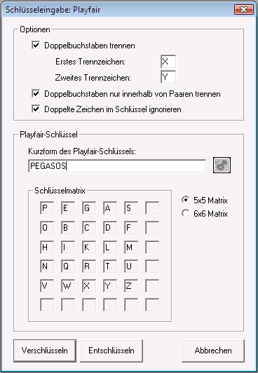

Im folgenden wird ein Szenario für das Playfair-Verschlüsselungsverfahren vorgestellt. Die Veranschaulichung durch viele Bildschirmfotos erleichtert das Nachvollziehen der mit CrypTool durchgeführten Schritte.
Wir wollen zunächst das Playfair-Verschlüsselungsverfahren kennenlernen, indem wir ein Dokument öffnen, dieses verschlüsseln und im Anschluss daran wieder entschlüsseln. Danach wird versucht, den Schlüssel, mit dem ein Klartext verschlüsselt wurde, mit Hilfe der manuellen Playfairanalyse Schritt für Schritt zu ermitteln.
1. Playfair-Verschlüsselung
1.1 Öffnen Sie das zu entschlüsselnde Dokument: zum Beispiel CrypTool-de.txt,
das ein Teil der CrypTool-Hilfe ist. Das Öffnen dieser Datei
geschieht über das Menü Datei \
Öffnen.
1.2 Nun wollen wir dieses Dokument mit dem Playfair-Verschlüsselungsverfahren verschlüsseln.
Wählen Sie das Menü Ver-/Entschlüsseln \ Symmetrisch (klassisch) \ Playfair. So erhalten Sie den folgenden Dialog:

Nutzt man die Standard-5x5-Schlüssel-Matrix, besteht das Playfair-Alphabet aus den normalen Großbuchstaben A bis Z, wobei J weggelassen wird.
1.3 Als Schlüssel wird PEGASOS eingetragen.
Aus diesem Schlüsselwort wird die Playfair Schlüsselmatrix berechnet:
| P | E | G | A | S |
| O | B | C | D | F |
| H | I | K | L | M |
| N | Q | R | T | U |
| V | W | X | Y | Z |
1.4 Nach Betätigung des Buttons Verschlüsseln wird der Playfair-Schlüsseleingabedialog geschlossen und es öffnen sich nacheinander zwei Fenster: eines mit dem vorformatierten Klartext und eines mit dem verschlüsselten Text:

CrypTool ist"
der vorformatierte Text CRYPTOXOLIST.1.5 Als Beispiel verschlüsseln wir von Hand den vorformatierten Klartext CRYPTOXOLIST:
In der Playfair-Matrix beschreiben die Digramme des Klartextes die folgenden
Rechtecke(hier z.T. beispielhaft farblich hervorgehoben):
|
< -- > |
|
Wenn das Rechteck zweidimensional ist, dann zählen wir die Ecken im Rechteck wie folgt auf: Wir beginnen mit dem ersten Buchstaben im Klartextdigramm, danach wählen wir den Buchstaben, der die andere Ecke in der gleichen Zeile beschreibt und dann den zweiten Buchstaben des Klartextdigramms. Schließlich fügen wir den Buchstaben der letzten Ecke an.
Im selteneren Fall, wenn das Rechteck eindimensional ist, wählen wir zunächst aus der Playfair-Schlüsselmatrix den ersten Buchstaben des Klartextdigramms, dann den zu diesem Buchstaben unteren bzw. rechten Nachbar. Als drittes folgt der zweite Buchstabe des Klartextdigramms und schließlich der untere bzw. rechte Nachbar des zweiten Buchstaben aus dem Klartextdigramm.
Die noch unbenutzten Ecken aus dem Rechtecken bilden dann die Chiffren der
Klartextdigramme. Der Chiffretext der Eingabe lautet: KXVANDVCMKAU.
1.6 Wenn der Playfair-Chiffretext ein aktives Fenster in CrypTool ist, können
Sie auf die Toolbar-Ikone  klicken, oder Menü Bearbeiten \ Schlüssel Anzeigen wählen und der
Playfair-Schlüssel wird angezeigt. Sie können jetzt den Playfair-Schlüssel in
dem Schlüsselspeicher sichern. Dadurch brauchen Sie ihn im folgenden Schritt
(Entschlüsselung) nicht mehr eintippen.
klicken, oder Menü Bearbeiten \ Schlüssel Anzeigen wählen und der
Playfair-Schlüssel wird angezeigt. Sie können jetzt den Playfair-Schlüssel in
dem Schlüsselspeicher sichern. Dadurch brauchen Sie ihn im folgenden Schritt
(Entschlüsselung) nicht mehr eintippen.
2. Playfair-Entschlüsselung
Jetzt kann der Klartext dieses verschlüsselten Dokuments wieder ermittelt werden.
2.1 Wählen Sie das Menü Ver-/Entschlüsseln \ Symmetrisch (klassisch) \ Playfair.
2.2 Geben Sie in dem Dialog den Schlüssel,
mit dem das Dokument verschlüsselt
worden ist (PEGASOS), ein. Falls Sie diesen Schlüssel in den
internen Schlüsselspeicher
gesichert haben, können Sie den Schlüssel einfach durch das Anklicken der
 Ikone in den Schlüsseldialog kopieren.
Ikone in den Schlüsseldialog kopieren.

2.3 Drücken Sie den Knopf Entschlüsseln, um den Klartext zu erhalten.
3. Manuelle Playfair-Analyse
Wir wollen mit Hilfe der manuellen Analyse einen verschlüsselten Text dechiffrieren, von dem wir den Schlüssel (im Gegensatz zu Kapitel 2) nicht kennen (Ciphertext-only-Analyse).
3.1 Dazu laden wir den zu dechiffrierenden Text aus der Datei Playfair-enc-de.txt
(zu finden im CrypTool-Unterverzeichnis examples):

3.2 Dieser Text wurde mit dem Playfair-Verschlüsselungsverfahren ohne Vorformatierung erstellt: Bei dieser Verschlüsselungsoption werden Zeichen, die nicht zum Playfair-Alphabet gehören, unverändert in den Chiffretext übernommen. Deshalb erkennt man in diesem Chiffretext anhand der unverschlüsselten Leerzeichen, Satzzeichen und Zeilenvorschübe die Länge der einzelnen Wörter.
Außerdem wurden Doppelbuchstaben beim Verschlüsseln des Klartextes ignoriert, d.h. es wurde kein Trennzeichen X zwischen Doppelbuchstaben hineingeschoben. Die Doppelbuchstaben bleiben unverschlüsselt.
3.3 CrypTool analysiert den Playfair-Chiffretext nicht automatisch, sondern unterstützt die manuelle Playfair-Analyse. Deshalb benötigen wir zu Beginn der Analyse einen Hinweis über den ursprünglichen Klartext. Nehmen wir an, dass es sich bei dem Text um einen Brief handelt (Briefe beginnen oft mit den gleichen Worten).
3.4 Öffnen wir also das Fenster Playfairanalyse (Menü Analyse \ Symmetrische Verschlüsselung (klassisch) \ Manuelle Analyse \ Playfair).
Hier sieht man im Feld "Analyseergebnis" in der ersten Zeile den Text aus den geladenen Geheimtext-Daten (Chiffrat).

3.5 Wahrscheinlich beginnt der Brief mit dem Text Sehr geehrte Damen und Herren.
Der Text wird in dem Feld mit der Überschrift Vermuteter Klartext eingegeben. Nach jedem eingegebenen Buchstaben wird die Tabelle der Buchstabeninformationen aktualisiert.
Damit haben wir schon eine ganze Menge an Digrammpaaren vorgegeben:
| Chiffretext: | SE | HR | GE | EH | RT | ED | AM | EN | UN | DH | ER | RE |
| Klartext: | TG | IG | HR | RI | EF | RX | VN | IX | AX | LR | RG | GR |
| SE > TG
HR > IG GE > HR EH > RI RT > EF ED > RX |
AM > VN
EN > IX UN > AX DH > LR ER > RG RE > GR |
3.6 Durch einen Klick auf den Knopf Erzeuge Matrix werden mit diesen Informationen die bekannten Teile der Playfair-Schlüsselmatrix berechnet. Basierend auf dieser Matrix wird der vermutete Klartext weit möglichst berechnet [daher manuelle oder halbautomatische Analyse - Sie müssen Ideen für Teile des Klartextes haben, CrypTool berechnet daraus den vollständigen Klartext und die mögliche Schlüsselmatrix]:

Wie man von Hand die Berechnung ausführen könnte, wird hier gezeigt.
3.7 Drücken Sie den Button Synchronisiere Analyseergebnis / Vermuteter Klartext.
Die selektierte Checkbox-Option Vermuteter Klartext aktualisieren bewirkt, dass
das Ergebnis der Playfair-Entschlüsselung mit der Teilmatrix aus der Analyse in
das Feld "Vermuteter Klartext" kopiert wird. Dabei werden Buchstaben, die nicht
entschlüsselt werden können, mit dem Jokerzeichen '*'
markiert und können jetzt ersetzt werden.
3.8 Nun fallen etwa die Teilworte E**.*IEMLI** auf. Wenn wir
diese im Feld "Vermuteter Klartext" zu EIN.ZIEMLICH ergänzen,
ergeben sich die weiteren Digrammpaare: IN > BO und CH > HK. Mit der
bisherigen Schlüsselmatrix in dem ersten Digrammpaar folgern wir, dass die
Buchstaben I,N,B,O in der gleichen Spalte und somit in der Schlüsselmatrix der
Buchstabe B direkt unter I und der Buchstabe O direkt unter N liegt. Der Klick
auf Erzeuge Matrix vertauscht die zweite und vierte Zeile, danach die
zweite und die dritte Zeile, und liefert als Schlüsselmatrix:
| * | * | * | K | B |
| U | Z | * | * | A |
| X | D | M | L | N |
| T | F | S | C | O |
| E | R | G | H | I |
3.9 Leider führt die Entschlüsselung mit dieser Matrix zu Worten, die es nicht gibt.
SEHR.GEEHRTE.DAMEN.UND.HERREN...EIN.ZIEMLICH. GEHEIMER.*X**.BLEIOT.NICH*.IMMER.**NGE.GEHEIM..MI*.*DXUNDLICHEN.GRUX**EN
Jedoch können wir bis auf das Wort *X** mit hoher
Wahrscheinlichkeit den Klartext erraten. Deshalb korrigieren wir das Wort *X**
zu **** (um Konsistenzfehler bei der Playfair-Analyse zu
vermeiden) und korrigieren alle anderen Worte zu
SEHR.GEEHRTE.DAMEN.UND.HERREN...EIN.ZIEMLICH. GEHEIMER.****.BLEIBT.NICHT.IMMER.LANGE.GEHEIM..MIT.FREUNDLICHEN.GRUESSEN
3.10 Dies führt zu den weiteren Digrammpaaren BT > TF, TI > BE, LA > NW, TF > BZ, RE > FT, SS > KK und UE > XT. Ein Klick auf Matrix erzeugen liefert jetzt
SEHR.GEEHRTE.DAMEN.UND.HERREN...EIN.ZIEMLICH. GEHEIMER.TE**.BLEIBT.NICHT.IMMER.LANGE.GEHEIM..MIT.FREUNDLICHEN.GRUESSEN
| T | F | S | K | B |
| U | Z | V | W | A |
| X | D | M | L | N |
| * | * | * | C | O |
| E | R | G | H | I |
3.11 Zu guter letzt kommen wir, indem wir TE** zu TEXT
ergänzen, auf das Digrammpaar XT > PU. Die Playfair-Analyse des Chiffretext
liefert die Schlüsselmatrix
| T | F | S | K | B |
| U | Z | V | W | A |
| X | D | M | L | N |
| P | * | * | C | O |
| E | R | G | H | I |
3.12 Der Klartext wurde ursprünglich mit dem äquivalenten Passwort HIERGIBTESWASZUENTDECKEN
(siehe Hinweis zur Schlüsselmatrix) verschlüsselt, wobei
die Optionen Text vorformatieren und Doppelte Zeichen im Schlüssel
ignorieren deaktiviert waren. Schließlich erhalten wir den Klartext:
SEHR.GEEHRTE.DAMEN.UND.HERREN...EIN.ZIEMLICH. GEHEIMER.TEXT.BLEIBT.NICHT.IMMER.LANGE.GEHEIM..MIT.FREUNDLICHEN.GRUESSEN
3.13 Durch Betätigung des Knopfes Ergebnis der Analyse ausgeben wird die Dialogbox Playfairanalyse beendet und der Klartext angezeigt.
Bemerkung:
Hinweis zur Schlüsselmatrix:Eine zyklisch verschobene Schlüsselmatrix führt zu einem gleichen Ergebnis. Daher ist das ursprünglich gewählte Passwort nicht zwingend direkt aus der berechneten Matrix heraus zu lesen.
4. Berechnung der Schlüsselmatrix von Hand
Wir zeigen anhand der Klartextvermutung und den Regeln zur Playfair-Verschlüsselung, wie die Schlüsselmatrix von Hand berechnet werden kann:
| * | * | * | * | * |
| F | S | * | * | T |
| * | * | * | A | U |
| D | * | L | N | X |
| R | G | H | I | E |
Mit dem bekannten Digrammpaar (AM > VN) können wir die Matrix erweitern, da in der vierten Zeile nur noch eine mögliche Stelle für das M zur Verfügung steht:
| * | * | * | * | * |
| F | S | * | * | T |
| * | V | * | A | U |
| D | M | L | N | X |
| R | G | H | I | E |
Die folgenden Schaulbilder zeigen, wie eine gefundene Zuordnung RT > EF (siehe Absatz 3.5 oben) angeordnet sein kann:
a) Die Buchstaben formen ein Rechteck.
b) Die Buchstaben liegen alle in einer Zeile oder in einer Spalte.